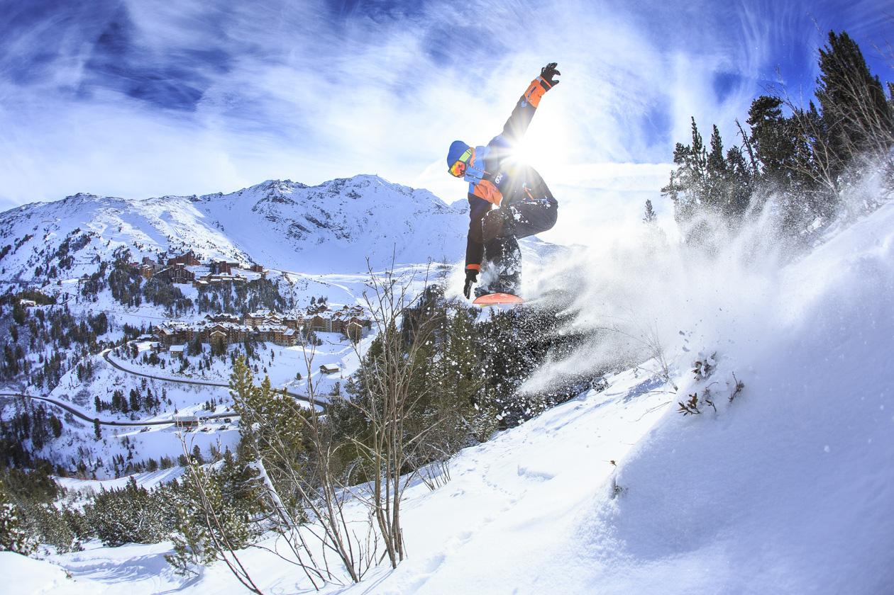

Snowboarding
Sport zimowy polegający na jeździe lub wykonywaniu manewrów na desce snowboardowej.Za początek snowboardingu można uznać rok 1965, kiedy Sherman Poppen wymyślił "snurfera", choć zjeżdżanie po zaśnieżonym stoku na jednej desce było praktykowane już wcześniej.
Dyscyplina wprowadzona została do programu Zimowych Igrzysk Olimpijskich w 1998 roku.
Konkurencje:
Snowboarding dzieli się na cztery główne style jazdy takie jak:-Freestyle
-Styl alpejski
-Freeride
-Snowcross